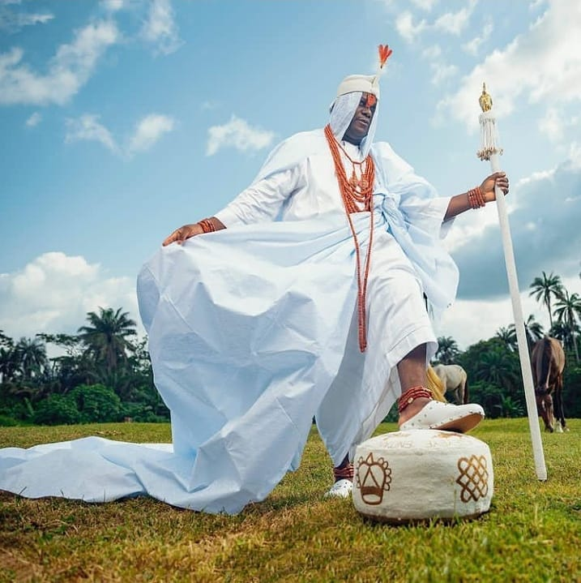
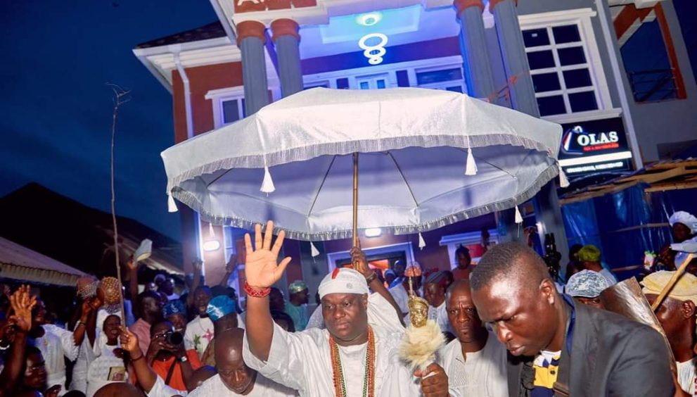
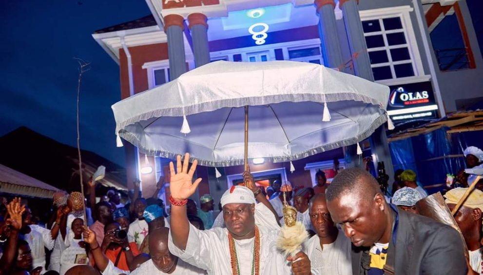

INTRODUCTION TO OLOJO FESTIVAL:

The Olojo Festival is an ancient festival celebrated annually in Ife,
Osun State, Nigeria.[1] It is one of the popular festivals in the
Yoruba land, and was once described by Oba Adeyeye Enitan Ogunwusi as
a festival that celebrates the Black race all over the world. The
Yoruba word 'Olojo' means 'The Day Of The First Dawn' that describes
the grateful heart of man towards God's creation and the existence of
Human. The Olojo Festival is a culture festival in the calendar
of the Ile-Ife, Osun State which is located in the Southwestern part
of Nigeria. It is the celebration of the remembrance of “Ogun”,
god of Iron, who is believed to be the first son of Oduduwa,
progenitor of the Yoruba people. The festival is held annually in
October. It is one of the biggest festival on the culture calendar
of lle-Ife
 

Must Know About Olojo Festival
- On this day, the Ooni (king of Ife) appears after seven days of seclusion and denial, communing with the ancestors and praying for his people. This is to make him pure and ensure the efficacy of his prayers. Before the Ooni emerges, women from his maternal and paternal families sweep the Palace, symbolically ridding the Palace of evil.
- The Ooni later appears in public with the Are crown (King’s Crown), which is believed to be the original crown used by Oduduwa to lead a procession of traditional Chiefs and Priests to perform at the Shrine of Ogun. The next stage of the ceremony is to lead the crowd to Okemogun’s shrine. Here he performs duties including the renewal of oath, divination for the Ooni at the foot of Oketage hill by Araba (Chief Priest), as well as visiting places of historical importance.
- At the shrine, the traditional Chiefs with the swords of office marked with chalk and cam wood, appear in ceremonial attire and dance to rhythms from Bembe, a traditional drum. The style of grum and singing for each Chief is different. Only the Ooni can dance to the drum called Osirigi.
- The Ifa Festival is a seven-day festival that takes place every year on the first Saturday in June. Ifa (also known as Orunmila) is a deity oracle and one of the Yoruba people's most important deities. The first day of the festival includes rituals such as Ijawe Ifa Ooni (leaf picking for Ooni's oracle) and Arisun Idana Afin (a culinary vigil at the palace), while the second day is dedicated to Bibo Ifa Ooni (sacrifice for Ooni's oracle). The third and fourth days are dedicated to Awo Oloju merindinlogun performing rites (a cult with sixteen faces). A public lecture and roundtable discussion on 'women in Ifa,' as well as a performance of rituals by a priest named Araba Agbaye, took place on the fifth day. The great climax, which begins on Saturday and lasts until early the next day, includes iwure (blessings/prayer) by Araba Agbaye (backbone of the universe) and other Arabas, as well as the feeding of Ifa and the crafting of the year's divination.
- Olojo has remained popular in Ile-Ife because of its myth and history. It connotes the day in the year specially blessed by Olodumare (the creator of the Universe). Olojo can also be literally translated as the "Owner for the day". Prayers are offered for peace and tranquility in Yoruba and Nigeria. All age groups participate. Its significance is the unification of the Yorubas.
- Tradition holds that Ile-Ife is the cradle of the Yorubas, the city of survivors, spiritual seat of the Yorubas, and land of the ancients.